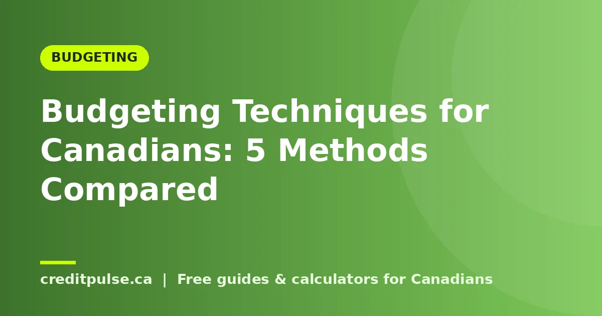

Budgeting Techniques for Canadians: 5 Methods Compared

There is no single right way to budget. There is only the method you will actually keep using. Some people want every dollar planned; others need something they can set up in ten minutes and mostly forget.
This guide walks through five proven budgeting techniques for Canadians: the 50/30/20 rule, zero-based budgeting, the envelope method, pay-yourself-first, and the 80/20 budget. For each one you get how it works, who it suits, and a worked example in Canadian dollars. Pick one, try it for a month, and adjust.
Start with your real numbers: Every method below begins with your monthly take-home pay and your essential costs. The free Credit Pulse Budget Calculator does that math for you in Canadian dollars. It's free and needs no sign-up.
Before you start: use your take-home pay
Every technique here uses take-home pay: what lands in your bank account after income tax, CPP contributions and EI premiums are deducted. Budgeting from your gross salary is one of the most common beginner mistakes, because the money you plan to spend does not exist.
If you are paid biweekly, remember that two months each year contain three paydays. Many people budget on two paycheques a month and treat the third as a bonus for savings or debt.
For all the examples below, we will use a take-home income of $4,200 a month.
1. The 50/30/20 rule
The 50/30/20 rule splits take-home pay into three buckets:
- 50% for needs: rent or mortgage, utilities, groceries, insurance, transportation, phone, and minimum debt payments.
- 30% for wants: dining out, entertainment, subscriptions, travel, hobbies.
- 20% for savings and debt: emergency fund, TFSA or RRSP contributions, and payments above your debt minimums.
| Bucket | Share | On $4,200/month |
|---|---|---|
| Needs | 50% | $2,100 |
| Wants | 30% | $1,260 |
| Savings & extra debt payments | 20% | $840 |
The Canadian reality check: in many cities, rent alone can take most of the 50%. If your needs come to 60% or more, that is common, not a failure. Shrink the wants bucket first, protect the savings bucket if you can, and treat 50/30/20 as a target rather than a rule.
Best for: beginners who want a simple structure without tracking every purchase. The Budget Calculator uses this framework, so you can see your split instantly.
2. Zero-based budgeting
Zero-based budgeting gives every dollar a job. Income minus everything you plan for (spending, saving and debt) equals exactly zero. It doesn't mean spending everything; savings and debt payments are jobs too.
| Category | Monthly amount |
|---|---|
| Rent | $1,550 |
| Groceries | $500 |
| Hydro, heat and internet | $200 |
| Cell phone | $75 |
| Transit or fuel and car insurance | $300 |
| Debt payments | $450 |
| Emergency fund | $300 |
| TFSA or RRSP | $200 |
| Eating out | $200 |
| Entertainment and subscriptions | $120 |
| Clothing and personal care | $150 |
| Irregular costs (gifts, car repairs, annual fees) | $155 |
| Total assigned | $4,200 → $0 left unassigned |
The "irregular costs" line is what makes zero-based budgeting work in real life. Setting aside a small amount every month for predictable but infrequent bills (holidays, car maintenance, annual renewals) stops them from landing on a credit card.
Best for: detail-oriented people, anyone paying down debt aggressively, and households that keep asking "where did the money go?"
3. The envelope method (cash stuffing)
The envelope method puts hard limits on the categories where overspending happens most. On payday, you put a set amount of cash into labelled envelopes, such as groceries, eating out, entertainment and personal spending. When an envelope is empty, spending in that category stops until the next payday.
Example: on $4,200 a month paid biweekly, you might put $250 in the groceries envelope, $100 in eating out and $60 in entertainment each payday. Fixed bills like rent and insurance stay on automatic payments; only the flexible categories go into envelopes.
If you rarely use cash, the same idea works digitally: open separate no-fee sub-accounts, or use a spreadsheet tab per category, and transfer each category's amount on payday.
Best for: people who overspend with cards, and anyone who wants a visible, physical limit.
4. Pay yourself first
Pay-yourself-first flips the usual order. Instead of saving whatever is left at the end of the month (often nothing), you move a fixed amount to savings or debt the day you get paid, then live on the rest.
Example: set an automatic transfer of 15% of take-home pay, or $630 a month on $4,200, to a separate savings account or toward debt on payday. You then budget the remaining $3,570 for bills and spending however you like.
Automation is the whole point. Because the transfer happens before you see the money, saving no longer depends on willpower.
Best for: people who want to build savings or pay down debt consistently without detailed tracking.
5. The 80/20 budget
The 80/20 budget is the simplest version of pay-yourself-first: 20% of take-home pay goes to savings and extra debt payments, and the other 80% covers everything else, with no further categories.
Example: on $4,200 a month, $840 goes to savings or debt on payday and $3,360 covers all bills and spending.
The trade-off is less visibility. If you keep running short before payday, move to the 50/30/20 rule or zero-based budgeting to find out where the money is going.
Best for: people whose bills are already under control and who mainly want a savings habit.
Comparing the five budgeting methods
| Method | Effort | Control | Best for |
|---|---|---|---|
| 50/30/20 | Low | Medium | Beginners |
| Zero-based | High | Very high | Paying off debt, tight budgets |
| Envelope | Medium | High on flexible spending | Overspending on cards |
| Pay yourself first | Low | Medium | Building savings |
| 80/20 | Very low | Low | Stable finances, savings habit |
How to pick your budgeting method
- You have debt and want to clear it fast: zero-based budgeting, combined with a repayment strategy from our guide to debt repayment strategies in Canada.
- You have never budgeted before: start with 50/30/20.
- Your card spending surprises you every month: try the envelope method for your flexible categories.
- Bills are fine but you never save: pay yourself first, or the 80/20 budget.
- Your income changes month to month: read our guide to budgeting on an irregular income.
You can also combine methods. A common mix is pay-yourself-first for savings, automatic payments for fixed bills, and envelopes for groceries and eating out.
Get started in 5 steps
- Find your monthly take-home pay from your last few pay stubs or deposits.
- List your fixed bills: rent or mortgage, utilities, phone, insurance, transportation and minimum debt payments.
- Look at the last two to three months of spending in your bank and card statements to see where the rest went.
- Choose one method from this guide and set it up in the Budget Calculator or a simple spreadsheet.
- Automate one thing (a savings transfer or extra debt payment on payday), then review after 30 days.
Carrying balances? Once your budget shows how much you can put toward debt each month, enter it into the free Debt Payoff Calculator to see your debt-free date.
Frequently asked questions
What is the best budgeting method for beginners in Canada?
The 50/30/20 rule is the easiest place to start: 50% of take-home pay for needs, 30% for wants and 20% for savings and extra debt payments. If your needs take more than 50%, which is common in many Canadian cities, cut wants first.
Does the 50/30/20 rule work in Canada?
It works as a target. With high rents in many cities, needs often take 55% to 65% of take-home pay. Use the percentages as a guide, protect your savings and debt bucket where you can, and adjust the wants bucket to fit.
Should I budget using gross or net income?
Use net (take-home) income: what reaches your bank account after income tax, CPP contributions and EI premiums. Budgeting from gross pay plans spending with money you never receive.
What is zero-based budgeting?
Zero-based budgeting assigns every dollar of income a job (spending, saving or debt repayment) until income minus everything assigned equals zero. It gives the most control and works well when you are paying down debt.
How do I budget when I am paid biweekly?
Budget on two paycheques a month. Two months each year have a third paycheque, which you can send straight to savings or debt.
Is there a free budget calculator for Canadians?
Yes. The Credit Pulse Budget Calculator is free, requires no sign-up and uses Canadian dollars. It splits your take-home pay using the 50/30/20 rule so you can see your numbers right away.
Disclaimer: This article is for general education only and is not financial, legal or tax advice. Credit Pulse is an education-based membership platform. We do not provide loans, credit cards, credit repair, legal advice, financial advice or financial products. Cashback eligibility, timing and results may vary. For advice about your situation, speak with a qualified professional.
About the author: Rodgen L.
Rodgen writes Credit Pulse’s guides on budgeting, debt and everyday money skills for Canadians. Figures in this article were last checked on November 17, 2026. Spotted something out of date? Email info@creditpulse.ca.
Plan your next step with free tools
Use the free Budget Calculator and Debt Payoff Calculator. No sign-up, all in Canadian dollars.